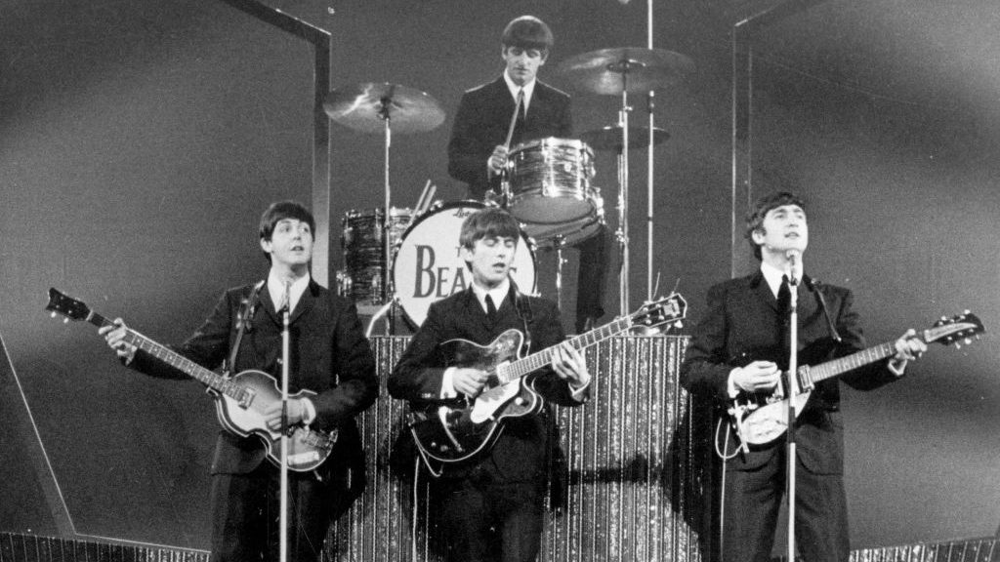
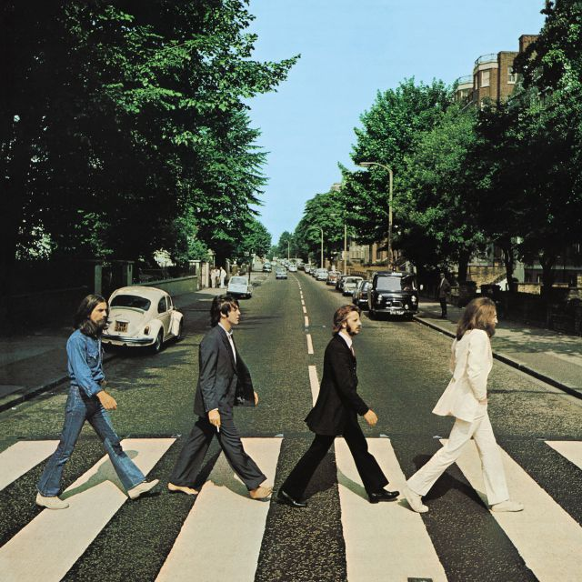

The Beatles, también conocida en el mundo hispano como los Beatles, fue una banda de rock británica formada en Liverpool durante los años 1960, estando integrada desde 1962 a su separación en 1970 por John Lennon, Paul McCartney, George Harrison y Ringo Starr. Está considerada como una de las bandas más importantes del movimiento contracultural de la década de 1960 y de la historia de la música.
En la primera foto, se puede ver a John Lennon, Paul McCartney, George Harrison y Ringo Starr tocando sus instrumentos. La imagen es icónica y representa el legado musical y cultural de la banda. Por otro lado, la segunda foto es del cruce en Abbey Road muestra a los cuatro miembros caminando juntos por el paso de cebra en la calle Abbey Road. Esta foto también se ha convertido en un símbolo de la banda y ha sido recreada por fans y turistas en numerosas ocasiones. La tercera muestra una de las primeras fotos que se tomaron los 4 integrantes juntos.
Estos son algunos de sus álbumes más reconocidos, en el apartado de Discografía, podrás ver de forma mas desarrollada la historia de estos discos y varios más.